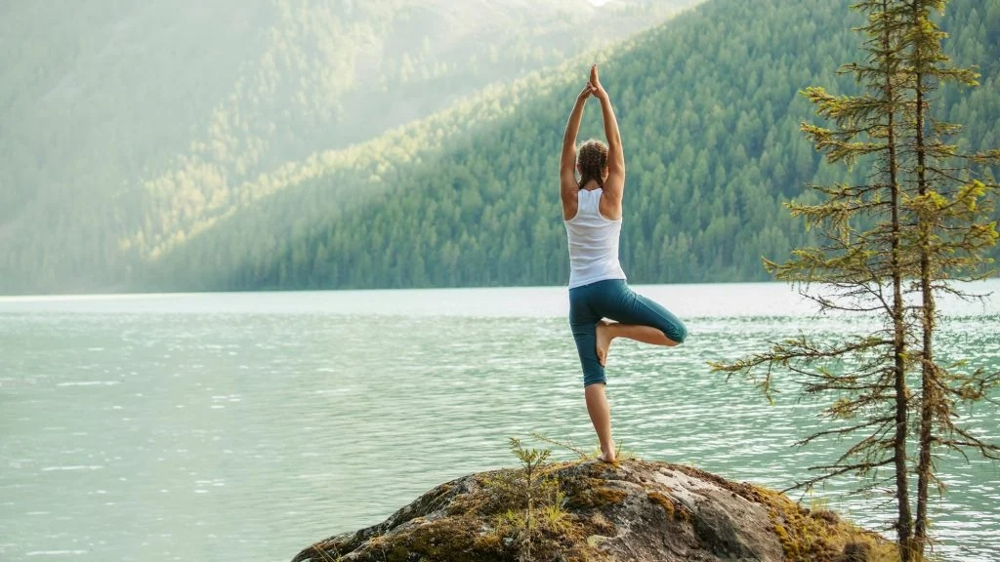
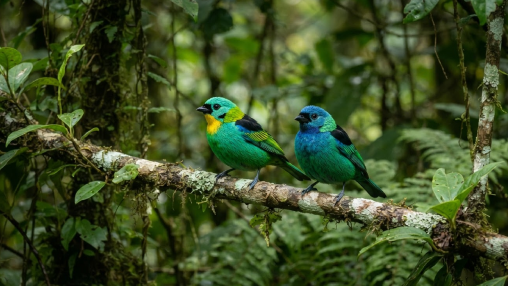
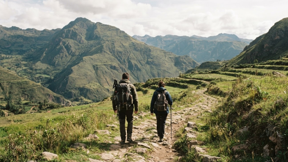

El arte de estar presente
Experiencias que reconectan
No se trata de hacer más, sino de sentir más. Elige una forma de acercarte a la
naturaleza y a ti.

Retiros · Bienestar
Yoga y Meditación
Reconecta con tu interior en entornos sagrados.
Respira profundo y escucha tu cuerpo. Una práctica suave, acompañada por la serenidad del paisaje, para estar presente.
• Todos los niveles · Grupos pequeños
Encuentra tu retiro
Selva · Exploración
Avistamiento de Fauna
Descubre la magia de la biodiversidad en silencio.
Adéntrate en Tambopata con guías locales. Observa aves y vida silvestre en su hábitat, con paciencia y respeto por cada encuentro.
• Guía local · Observación responsable
Explora la biodiversidad
Andes · Conexión
Trekking Consciente
Camina a tu propio ritmo por senderos ancestrales.
Cada paso es una invitación a conectar. Recorre los Andes, haz una pausa y deja que el paisaje te cuente su historia.
• Ritmo tranquilo · Acompañamiento local
Descubre los senderos